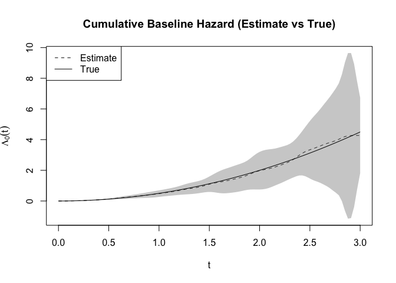

The goal of coxstream is to …
Installation
You can install the development version of coxstream like so:
# install.packages("pak")
pak::pak("SignorinoY/coxstream")Example
This is a basic example which shows you how to solve a common problem:
library(coxstream)
## basic example code
formula <- Surv(time, status) ~ X1 + X2 + X3 + X4 + X5
fit <- coxstream(
formula, sim[sim$batch_id == 1, ],
n_basis = 3, boundary = c(0, 3), idx_col = "patient_id"
)
for (batch in 2:10) {
fit <- update(fit, sim[sim$batch_id == batch, ])
}
summary(fit)
#> Call:
#> coxstream(formula = formula, data = sim[sim$batch_id == 1, ],
#> n_basis = 3, boundary = c(0, 3), idx_col = "patient_id")
#>
#> Number of basis: 7
#> coef exp(coef) se z p
#> X1 1.02653 2.79136 0.04993 20.56 <2e-16 ***
#> X2 1.04367 2.83962 0.05241 19.91 <2e-16 ***
#> X3 1.04391 2.84029 0.05289 19.74 <2e-16 ***
#> X4 0.89585 2.44943 0.05068 17.68 <2e-16 ***
#> X5 1.06450 2.89940 0.04994 21.32 <2e-16 ***
#> ---
#> Signif. codes: 0 '***' 0.001 '**' 0.01 '*' 0.05 '.' 0.1 ' ' 1
#> exp(coef) exp(-coef) lower .95 upper .95
#> X1 2.7914 0.3582 2.5311 3.0784
#> X2 2.8396 0.3522 2.5624 3.1468
#> X3 2.8403 0.3521 2.5606 3.1506
#> X4 2.4494 0.4083 2.2178 2.7052
#> X5 2.8994 0.3449 2.6291 3.1975Besides the estimated coefficients, we can also obtain the estimated baseline hazard function. The following code plots the estimated cumulative baseline hazard function and the true cumulative baseline hazard function.
time <- seq(0, 3, length.out = 100)
basehaz_pred <- basehaz(fit, time)
basehaz_true <- cbind(time, 0.5 * time^2)
plot(
time, basehaz_pred[, 2],
type = "l", lty = 2,
ylim = range(basehaz_pred[, 4], basehaz_pred[, 5]),
xlab = expression(t), ylab = expression(Lambda[0](t)),
main = "Cumulative Baseline Hazard (Estimate vs True)"
)
polygon(
c(time, rev(time)), c(basehaz_pred[, 4], rev(basehaz_pred[, 5])),
col = rgb(0.5, 0.5, 0.5, 0.4), border = NA
)
lines(basehaz_true[, 1], basehaz_true[, 2])
legend("topleft", legend = c("Estimate", "True"), lty = c(2, 1))